7. الواجهات الرسومية باستخدام C# و VS.NET
7.1. أساسيات واجهات المستخدم الرسومية
7.1.1. المشروع الأول
لنقم بإنشاء أول مشروع "تطبيق Windows":
 |
- [1]: إنشاء مشروع جديد
- [2]: نوع تطبيق Windows
- [3]: اسم المشروع غير مهم في الوقت الحالي
- [4]: تم إنشاء المشروع
 |
- [5]: حفظ الحل الحالي
- [6]: اسم المشروع
- [7]: ملف الحل
- [8]: اسم الحل
- [9]: سيتم إنشاء مجلد لحل [Chap5]. وستكون مشاريعه في مجلدات فرعية.
 |
- [10]: المشروع [01] في الحل [Chap5] :
- [Program.cs] هو الفئة الرئيسية للمشروع
- [Form1.cs] هو ملف المصدر الذي يدير سلوك النافذة [11]
- [Form1.Designer.cs] هو الملف المصدر الذي يغلف المعلومات المتعلقة بمكونات النافذة [11]
- [11]: الملف [Form1.cs] في وضع التصميم
- [12]: يمكن تشغيل التطبيق الذي تم إنشاؤه بواسطة (Ctrl-F5). يتم عرض نافذة [Form1]. يمكن تحريكها وتغيير حجمها وإغلاقها. العناصر الأساسية للنافذة الرسومية متاحة الآن.
الفئة الرئيسية [Program.cs] هي كما يلي:
using System;
using System.Windows.Forms;
namespace Chap5 {
static class Program {
/// <summary>
/// The main entry point for the application.
/// </summary>
[STAThread]
static void Main() {
Application.EnableVisualStyles();
Application.SetCompatibleTextRenderingDefault(false);
Application.Run(new Form1());
}
}
}
- السطر 2: تستخدم التطبيقات التي تحتوي على نماذج مساحة الاسم System.Windows.Forms.
- السطر 4: تم تغيير اسم مساحة الاسم الأصلية إلى Chap5.
- السطر 10: عند تشغيل المشروع (Ctrl-F5)، يتم تنفيذ الأسلوب [Main].
- الأسطر 11-13: ينتمي تطبيق classroom إلى System.Windows.Forms. وهو يحتوي على طرق ثابتة لبدء وإيقاف تطبيقات رسومات Windows.
- السطر 11: اختياري - يسمح لك بإعطاء أنماط مرئية مختلفة لعناصر التحكم الموضوعة في النموذج
- السطر 12: اختياري - يحدد محرك العرض لنصوص عناصر التحكم: GDI+ (صحيح)، GDI (خطأ)
- السطر 13: السطر الوحيد الضروري في الدالة [Main]: يقوم بإنشاء مثيل لفئة [Form1]، وهي فئة النموذج، ويأمرها بالتشغيل.
ملف المصدر [Form1.cs] هو كما يلي:
using System;
using System.Windows.Forms;
namespace Chap5 {
public partial class Form1 : Form {
public Form1() {
InitializeComponent();
}
}
}
- السطر 5: يستمد نموذج Form1 الخاص بالفصل الدراسي من فئة [System.Windows.Forms.Form]، وهي الفئة الأم لجميع النوافذ. تشير الكلمة الرئيسية partial إلى أن الفئة جزئية ويمكن استكمالها بواسطة ملفات مصدر أخرى. وهذا هو الحال هنا، حيث تنقسم فئة Form1 إلى ملفين:
- [Form1.cs]: حيث ستجد سلوك النموذج، بما في ذلك معالجات الأحداث الخاصة به
- [Form1.Designer.cs]: يحتوي على مكونات النموذج وخصائصها. يتم إعادة إنشاء هذا الملف في كل مرة يقوم فيها المستخدم بتعديل النافذة في وضع [التصميم].
- الأسطر 6-8: منشئ الفئة Form1
- السطر 7: يستدعي InitializeComponent. هذه الطريقة غير موجودة في [Form1.cs]. توجد في [Form1.Designer.cs].
ملف المصدر [Form1.Designer.cs] هو كما يلي:
namespace Chap5 {
partial class Form1 {
// <summary>
// Required designer variable.
// </summary>
private System.ComponentModel.IContainer components = null;
//tax <summary>
//tax Clean up any resources being used.
//tax </summary>
//tax <param name="disposing">true if managed resources should be disposed; otherwise, false.</param>
protected override void Dispose(bool disposing) {
if (disposing && (components != null)) {
components.Dispose();
}
base.Dispose(disposing);
}
#region Windows Form Designer generated code
//tax <summary>
//a IImpot object Required method for Designer support - do not modify
//Tax the contents of this method with the code editor.
/// </summary>
private void InitializeComponent() {
this.SuspendLayout();
///
///
///
this.AutoScaleDimensions = new System.Drawing.SizeF(6F, 13F);
this.AutoScaleMode = System.Windows.Forms.AutoScaleMode.Font;
this.ClientSize = new System.Drawing.Size(196, 98);
this.Name = "Form1";
this.Text = "Form1";
this.ResumeLayout(false);
}
#endregion
}
}
- السطر 2: الفئة هي دائمًا Form1. لاحظ أنه لم يعد من الضروري تكرار أنها مشتقة من Form.
- الأسطر 25-37: الطريقة InitializeComponent التي يتم استدعاؤها بواسطة منشئ الفئة [Form1]. تقوم هذه الطريقة بإنشاء وتهيئة جميع مكونات النموذج. يتم إعادة إنشاؤها في كل مرة يتم فيها تغيير النموذج في وضع [التصميم]. يتم إنشاء قسم يسمى region لتحديدها في الأسطر 19-39. يجب على المطور عدم إضافة أي كود إلى هذه المنطقة: سيتم استبدالها في المرة التالية التي يتم فيها إعادة إنشاؤها.
في البداية، من الأسهل تجاهل كود [Form1.Designer.cs]. يتم إنشاؤه تلقائيًا وهو ترجمة إلى لغة C# للاختيارات التي قام بها المطور في وضع [design]. لنأخذ مثالًا أول:
 |
- [1]: حدد وضع [design] بالنقر المزدوج على الملف [Form1.cs]
- [2]: انقر بزر الماوس الأيمن على النموذج واختر [خصائص]
- [3]: نافذة خصائص [Form1]
- [4]: تمثل الخاصية [Text] عنوان النافذة
- [5]: يتم أخذ التغيير في الخاصية [Text] في الاعتبار في وضع [design] وكذلك في شفرة المصدر [Form1.Designer.cs]:
private void InitializeComponent() {
this.SuspendLayout();
...
this.Text = "Mon 1er formulaire";
...
}
7.1.2. مشروع ثانٍ
7.1.2.1. النموذج
نحن نبدأ مشروعًا جديدًا يسمى 02. للقيام بذلك، نتبع الإجراء الموصوف أعلاه لإنشاء مشروع. النافذة التي سيتم إنشاؤها هي كما يلي:
 |
مكونات النموذج هي كما يلي:
رقم | الاسم | النوع | الدور |
1 | تسمية الإدخال | التسمية | صياغة |
2 | مربع النص | مربع النص | حقل إدخال |
3 | buttonAfficher | زر | لعرض محتويات حقل الإدخال textBoxSaisie في مربع حوار |
لإنشاء هذه النافذة، اتبع الخطوات التالية:
 |
- [1]: انقر بزر الماوس الأيمن على النموذج خارج أي مكون واختر الخيار [خصائص]
- [2]: تظهر ورقة خصائص النافذة في الزاوية اليمنى السفلية من Visual Studio
تتضمن خصائص النموذج ما يلي:
لتعيين لون خلفية النافذة | |
لتعيين لون الرسومات أو النص في النافذة | |
لربط قائمة بالنافذة | |
لإعطاء النافذة عنوانًا | |
لتعيين نوع النافذة | |
لتعيين الخط المستخدم في الكتابة في | |
لتعيين اسم النافذة |
هنا، نقوم بتعيين خصائص النص والاسم:
المدخلات والأزرار - 1 | |
frmSaisiesBoutons |
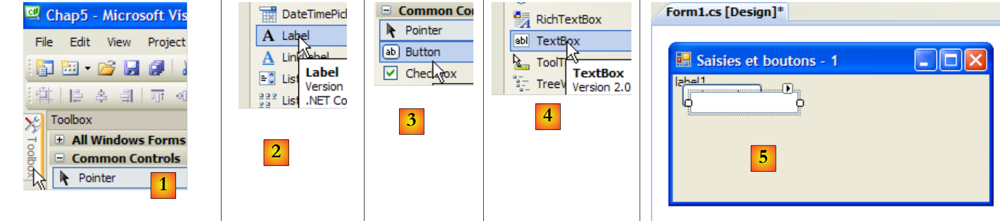 |
- [1]: اختر صندوق أدوات [Common Controls] من بين صناديق الأدوات المتاحة في Visual Studio
- [2، 3، 4]: انقر نقرًا مزدوجًا على مكونات [Label] و[Button] و[TextBox] بالتتابع
- [5]: المكونات الثلاثة موجودة في النموذج
لمحاذاة المكونات وتحديد حجمها بشكل صحيح، يمكنك استخدام عناصر شريط الأدوات:
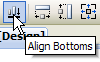 | |||||||||
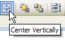 | |||||||||
مبدأ التنسيق هو كما يلي:
- حدد المكونات المراد تنسيقها معًا (اضغط باستمرار على مفتاح Ctrl أثناء النقر لتحديد المكونات)
- حدد نوع التنسيق المطلوب:
- (تابع)
- خيارات المحاذاة تسمح بمحاذاة المكونات إلى الأعلى أو الأسفل أو اليسار أو اليمين أو الوسط، إلخ
- خيارات "جعل الحجم متماثلاً" تسمح بجعل المكونات بنفس الارتفاع أو العرض
- خيار التباعد الأفقي يسمح بمحاذاة المكونات أفقيًا، مع وجود مسافات بينها بنفس العرض. وينطبق الأمر نفسه على خيار التباعد الرأسي لمحاذاة المكونات عموديًا.
- خيار "التوسيط" لتوسيط مكون أفقيًا (أفقيًا) أو عموديًا (عموديًا) في
بمجرد وضع المكونات، نقوم بتعيين خصائصها. للقيام بذلك، انقر بزر الماوس الأيمن على المكون واختر خيار "الخصائص":
 |
- [1]: حدد المكون لفتح نافذة خصائصه. في هذه النافذة، قم بتعديل الخصائص التالية: الاسم: labelSaisie، النص: Input
- [2]: تابع بنفس الطريقة: الاسم: textBoxSaisie، النص: لا تضع أي شيء
- [3] : الاسم: buttonAfficher، النص: عرض
- [4]: النافذة نفسها: الاسم: frmSaisiesBoutons، النص: المدخلات والأزرار - 1
- [5]: قم بتنفيذ (Ctrl-F5) المشروع للحصول على لمحة أولية عن النافذة أثناء العمل.
تم تحويل ما تم إنجازه في وضع [design] إلى كود [Form1.Designer.cs]:
namespace Chap5 {
partial class frmSaisiesBoutons {
...
private System.ComponentModel.IContainer components = null;
...
private void InitializeComponent() {
this.labelSaisie = new System.Windows.Forms.Label();
this.buttonAfficher = new System.Windows.Forms.Button();
this.textBoxSaisie = new System.Windows.Forms.TextBox();
this.SuspendLayout();
///
///
///
this.labelSaisie.AutoSize = true;
this.labelSaisie.Location = new System.Drawing.Point(12, 19);
this.labelSaisie.Name = "labelSaisie";
this.labelSaisie.Size = new System.Drawing.Size(35, 13);
this.labelSaisie.TabIndex = 0;
this.labelSaisie.Text = "Saisie";
///
///
///
this.buttonAfficher.Location = new System.Drawing.Point(80, 49);
this.buttonAfficher.Name = "buttonAfficher";
this.buttonAfficher.Size = new System.Drawing.Size(75, 23);
this.buttonAfficher.TabIndex = 1;
this.buttonAfficher.Text = "Afficher";
this.buttonAfficher.UseVisualStyleBackColor = true;
this.buttonAfficher.Click += new System.EventHandler(this.buttonAfficher_Click);
///
// Form1
// labelSaisie
this.textBoxSaisie.Location = new System.Drawing.Point(80, 19);
this.textBoxSaisie.Name = "textBoxSaisie";
this.textBoxSaisie.Size = new System.Drawing.Size(100, 20);
this.textBoxSaisie.TabIndex = 2;
// buttonAfficher
// textBoxSaisie
// frmSaisiesBoutons
this.AutoScaleDimensions = new System.Drawing.SizeF(6F, 13F);
this.AutoScaleMode = System.Windows.Forms.AutoScaleMode.Font;
this.ClientSize = new System.Drawing.Size(292, 118);
this.Controls.Add(this.textBoxSaisie);
this.Controls.Add(this.buttonAfficher);
this.Controls.Add(this.labelSaisie);
this.Name = "frmSaisiesBoutons";
this.Text = "Saisies et boutons - 1";
this.ResumeLayout(false);
this.PerformLayout();
}
private System.Windows.Forms.Label labelSaisie;
private System.Windows.Forms.Button buttonAfficher;
private System.Windows.Forms.TextBox textBoxSaisie;
}
}
- الأسطر 53-55: أدت المكونات الثلاثة إلى إنشاء ثلاثة حقول خاصة في فئة [Form1]. لاحظ أن أسماء هذه الحقول هي الأسماء التي أُعطيت للمكونات في وضع [design]. وينطبق هذا أيضًا على السطر 2، وهو الفئة نفسها.
- الأسطر 7-9: يتم إنشاء الكائنات الثلاثة من النوع [Label] و[TextBox] و[Button]. تُستخدم هذه الكائنات لإدارة المكونات المرئية.
- الأسطر 14-19: تكوين التسمية labelSaisie
- الأسطر 23-29: تكوين الزر buttonAfficher
- الأسطر 33-36: تكوين حقل الإدخال textBoxSaisie
- الأسطر 40-47: تكوين النموذج frmSaisiesBoutons. توضح الأسطر 43-45 كيفية إضافة المكونات إلى النموذج.
هذا الكود سهل الفهم. ولذلك، يمكن إنشاء النماذج عبر الكود دون الحاجة إلى استخدام وضع [التصميم]. وترد أمثلة عديدة على ذلك في وثائق MSDN الخاصة بـ Visual Studio. ويتيح إتقان هذا الكود إنشاء النماذج أثناء وقت التشغيل: على سبيل المثال، إنشاء نموذج على الفور لتحديث جدول قاعدة بيانات، مع اكتشاف بنية الجدول فقط أثناء وقت التشغيل.
كل ما تبقى هو كتابة الإجراء لإدارة النقر على العرض. حدد الزر للوصول إلى نافذة خصائصه. تحتوي هذه النافذة على عدة علامات تبويب:
 |
- [1]: قائمة بالخصائص مرتبة أبجديًا
- [2]: أحداث التحكم
يمكن الوصول إلى خصائص وأحداث عناصر التحكم حسب الفئة أو أبجديًا:
- [3]: الخصائص أو الأحداث حسب الفئة
- [4]: الخصائص أو الأحداث حسب الترتيب الأبجدي
الأحداث في الفئات الخاصة بالزر Afficher هي كما يلي:
 |
- [1]: يسرد العمود الأيسر من النافذة الأحداث المحتملة على الزر. النقر على زر ما يتوافق مع الحدث "Click".
- [2]: يحتوي العمود الأيمن على اسم الإجراء الذي يتم استدعاؤه عند حدوث الحدث المقابل.
- [3]: إذا نقرت مرتين على خلية الحدث Click، فسننتقل تلقائيًا إلى نافذة الكود لكتابة معالج الحدث Click button buttonAfficher :
using System;
using System.Windows.Forms;
namespace Chap5 {
public partial class frmSaisiesBoutons : Form {
public frmSaisiesBoutons() {
InitializeComponent();
}
private void buttonAfficher_Click(object sender, EventArgs e) {
}
}
}
- الأسطر 10-12: هيكل معالج الحدث انقر على الزر المسمى buttonAfficher. يجب ملاحظة النقاط التالية:
- يُسمى الأسلوب على النحو التالي: eventName_ComponentName
- الطريقة خاصة. تتلقى معلمتين:
- sender : هو الكائن الذي أطلق الحدث. إذا تم تنفيذ الإجراء بعد النقر على buttonAfficher، فسيكون sender مساوياً لـ buttonAfficher. من الممكن أن يتم تنفيذ buttonAfficher_Click من إجراء آخر. عندئذٍ سيكون لهذا الإجراء الحرية في تعيين الكائن sender الذي يختاره.
- EventArgs : كائن يحتوي على معلومات حول الحدث. بالنسبة لحدث Click، لا يحتوي على أي شيء. بالنسبة لحدث حركة الماوس، سيحتوي على إحداثيات الماوس (X، Y).
- لن نستخدم أيًا من هذه المعلمات هنا.
يتطلب كتابة معالج الأحداث استكمال الهيكل الأساسي للكود السابق. في هذه الحالة، نريد عرض مربع حوار يحتوي على محتويات textBoxSaisie إذا لم يكن فارغًا [1]، أو رسالة خطأ في حالة عكس ذلك [2]:
 |
قد يكون الكود لتحقيق ذلك كما يلي:
private void buttonAfficher_Click(object sender, EventArgs e) {
// displays the text entered in the TextBox textboxSaisie
string texte = textBoxSaisie.Text.Trim();
if (texte.Length != 0) {
MessageBox.Show("Texte saisi= " + texte, "Vérification de la saisie", MessageBoxButtons.OK, MessageBoxIcon.Information);
} else {
MessageBox.Show("Saissez un texte...", "Vérification de la saisie", MessageBoxButtons.OK, MessageBoxIcon.Error);
}
تُستخدم فئة MessageBox لعرض الرسائل في نافذة. وقد استخدمنا هنا الطريقة Show التالية:
public static DialogResult Show(string text, string caption, MessageBoxButtons buttons, MessageBoxIcon icon);
مع
الرسالة المراد عرضها | |
عنوان النافذة | |
الأزرار الموجودة في النافذة | |
الرمز الموجود في |
يمكن أن تأخذ الأزرار قيمها من الثوابت التالية (مسبوقة بـ MessageBoxButtons كما هو موضح في السطر 7) أعلاه:
الأزرار | |
 | |
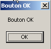 | |
 | |
 | |
 | |
 |
يمكن أن تستمد الأيقونة قيمها من الثوابت التالية (التي تسبقها كلمة MessageBoxIcon كما هو موضح في السطر 10) أعلاه:
 | نفس الشيء توقف | ||
نفس الشيء تحذير |  | ||
نفس الشيء علامة النجمة |  | ||
 | نفس الشيء يد | ||
 |
الطريقة Show هي طريقة ثابتة تُرجع نتيجة من النوع [System.Windows.Forms.DialogResult]، وهو نوع عددي:

لمعرفة الزر الذي ضغط عليه المستخدم لإغلاق MessageBox، نكتب:
7.1.2.2. كود إدارة الأحداث
بالإضافة إلى زر buttonAfficher_Click الذي كتبناه، قام Visual Studio بإنشاء السطر التالي في طريقة InitializeComponents في [Form1.Designer.cs]، والتي تقوم بإنشاء مكونات النموذج وتهيئتها:
this.buttonAfficher.Click += new System.EventHandler(this.buttonAfficher_Click);
Click هي فئة حدث Button [1، 2، 3]:
 |
- [5]: إعلان الحدث [Control.Click] [4]. وهذا يوضح أن الحدث Click ليس خاصًا بفئة [Button]. بل ينتمي إلى فئة [Control]، وهي الفئة الأم لفئة [Button].
- EventHandler هو نموذج أولي (نموذج) لطريقة تسمى delegate. سنعود إلى هذا لاحقًا.
- event هي كلمة رئيسية تقيد وظائف الـ delegate EventHandler : كائن الـ delegate له وظائف أكثر ثراءً من الـ event.
زيارة delegate يتم تعريف EventHandler على النحو التالي:
 |
تعيّن دالة EventHandler في زيارة الوفد نموذجًا للدالة:
- بنوع كمعلمة أولى Object
- والذي يكون المعلمة الثانية له هي EventArgs
- لا يعيد أي نتائج
وهذا هو الحال بالنسبة للطريقة الخاصة بإدارة النقرات على الزر Afficher الذي تم إنشاؤه بواسطة Visual Studio:
private void buttonAfficher_Click(object sender, EventArgs e);
يتوافق buttonAfficher_Click مع النموذج الأولي المحدد بواسطة EventHandler. لإنشاء EventHandler، اتبع الخطوات التالية:
EventHandler evtHandler=new EventHandler(méthode correspondant au prototype défini par le type EventHandler);
نظرًا لأن الزر buttonAfficher_Click يتوافق مع النموذج الأولي المحدد بواسطة EventHandler، يمكننا كتابة:
المتغير من نوع delegate هو في الواقع قائمة من الإشارات إلى الطرق مثل delegate. لإضافة طريقة جديدة M إلى المتغير evtHandler أعلاه، نستخدم الصيغة:
يمكن استخدام الرمز += حتى لو كان evtHandler قائمة فارغة.
لنعد إلى السطر في [InitializeComponent] الذي يضيف معالج أحداث إلى الحدث Click الخاص بالكائن buttonAfficher :
this.buttonAfficher.Click += new System.EventHandler(this.buttonAfficher_Click);
تضيف هذه التعليمات معالج أحداث إلى قائمة الطرق في buttonAfficher.Click. سيتم استدعاء هذه الطرق في كل مرة يتم فيها اكتشاف النقر على المكون buttonAfficher. غالبًا ما يكون هناك واحد فقط. ويُسمى "معالج الأحداث".
لنعد إلى توقيع EventHandler :
private delegate void EventHandler(object sender, EventArgs e);
المعلمة الثانية للوفد هي كائن من نوع EventArgs أو فئة مشتقة. نوع EventArgs عام جدًا ولا يوفر في الواقع أي معلومات حول الحدث الذي وقع. بالنسبة للنقر على زر، هذا كافٍ. بالنسبة لحركة الماوس على نموذج، سيكون لدينا MouseMove من فئة [Form] محددة بواسطة:
يتم تعريف الوكيل MouseEventHandler على النحو التالي:
 |
هذه دالة توقيع مفوضة من النوع void f (object, MouseEventArgs). يتم تعريف فئة MouseEventArgs بواسطة:
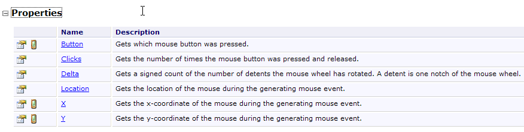 |
تعد فئة MouseEventArgs أكثر ثراءً من فئة EventArgs. على سبيل المثال، يمكننا معرفة إحداثيات الماوس X و Y في لحظة وقوع الحدث.
7.1.2.3. الخلاصة
من خلال المشروعين اللذين تمت دراستهما، يمكننا أن نستنتج أنه بمجرد إنشاء واجهة المستخدم الرسومية باستخدام Visual Studio، تتمثل مهمة المطور بشكل أساسي في كتابة معالجات الأحداث التي يرغب في إدارتها لهذه الواجهة. يتم إنشاء الكود تلقائيًا بواسطة Visual Studio. يمكن تجاهل هذا الكود، الذي قد يكون معقدًا، في البداية. ومع ذلك، قد توفر دراسته لاحقًا فهمًا أفضل لكيفية إنشاء النماذج وإدارتها.
7.2. المكونات الأساسية
نقدم الآن عددًا من التطبيقات التي تتضمن المكونات الأكثر شيوعًا، من أجل اكتشاف طرقها وخصائصها الرئيسية. لكل تطبيق، نقدم الواجهة الرسومية والكود ذي الصلة، وبشكل أساسي كود معالجات الأحداث.
7.2.1. نموذج النموذج
سنبدأ بعرض المكون الأساسي، وهو النموذج الذي تضع عليه المكونات. وقد عرضنا بالفعل بعض خصائصه الأساسية. وسنستعرض الآن بعض أهم أحداث النموذج.
يتم تحميل النموذج | |
يتم إغلاق النموذج | |
تم إغلاق النموذج |
يحدث الحدث Load قبل عرض النموذج. ويحدث الحدث Closing عند إغلاق النموذج. ومن الممكن أيضًا إيقاف هذا الإغلاق عن طريق البرمجة.
نقوم بإنشاء نموذج اسم Form1 بدون مكونات:
 |
- [1]: النموذج
- [2]: الأحداث الثلاثة التي تمت تغطيتها
فيما يلي كود [Form1.cs]:
using System;
using System.Windows.Forms;
namespace Chap5 {
public partial class Form1 : Form {
public Form1() {
InitializeComponent();
}
private void Form1_Load(object sender, EventArgs e) {
// initial form loading
MessageBox.Show("Evt Load", "Load");
}
private void Form1_FormClosing(object sender, FormClosingEventArgs e) {
// the form is closing
MessageBox.Show("Evt FormClosing", "FormClosing");
// confirmation requested
DialogResult réponse = MessageBox.Show("Voulez-vous vraiment quitter l'application", "Closing", MessageBoxButtons.YesNo, MessageBoxIcon.Question);
if (réponse == DialogResult.No)
e.Cancel = true;
}
private void Form1_FormClosed(object sender, FormClosedEventArgs e) {
// the form will be closed
MessageBox.Show("Evt FormClosed", "FormClosed");
}
}
}
نستخدم MessageBox لتلقي إشعارات بالأحداث.
السطر 10: سيحدث الحدث Load عندما التطبيق قبل أن يتم عرض النموذج: |  |
السطر 15: سيحدث الحدث FormClosing عندما يقوم المستخدم بإغلاق النافذة. |  |
السطر 19: ثم نسأله عما إذا كان يريد حقًا المغادرة الـ : |  |
السطر 20: إذا أجاب بـ "لا"، فإننا نعيّن الخاصية Cancel من الحدث CancelEventArgs e الذي تلقتها الطريقة في المعلمة. إذا قمنا بتعيين هذه الخاصية على False، يتم إيقاف النافذة، وإلا فإنه يستمر. سيحدث FormClosed: |  |
7.2.2. تسميات Label ومربعات الإدخال TextBox
لقد تعرفنا بالفعل على هذين المكونين. Label هو مكون نصي و TextBox هو مكون حقل إدخال. خاصيتهما الرئيسية هي Text التي تحدد إما محتوى حقل الإدخال أو نص التسمية. هذه الخاصية قابلة للقراءة والكتابة.
عادةً ما يُستخدم الحدث TextChanged مع عنصر TextBox، وهو يشير إلى أن المستخدم قد قام بتعديل حقل الإدخال. وفيما يلي مثال على استخدام TextChanged لتتبع التغييرات في حقل الإدخال:
 |
رقم | النوع | الاسم | الدور |
1 | مربع نص | textBoxSaisie | حقل الإدخال |
2 | تسمية | labelControle | يعرض النص من 1 في الوقت الفعلي AutoSize=False، Text=(rien) |
3 | زر | buttonEffacer | لحذف الحقلين 1 و 2 |
4 | زر | زرQuitter | للخروج من التطبيق |
رمز هذا التطبيق هو:
using System.Windows.Forms;
namespace Chap5 {
public partial class Form1 : Form {
public Form1() {
InitializeComponent();
}
private void textBoxSaisie_TextChanged(object sender, System.EventArgs e) {
// the content of TextBox has changed - copy it to Label labelControle
labelControle.Text = textBoxSaisie.Text;
}
private void buttonEffacer_Click(object sender, System.EventArgs e) {
// delete the contents of the input box
textBoxSaisie.Text = "";
}
private void buttonQuitter_Click(object sender, System.EventArgs e) {
// click on the Quit button - exit the application
Application.Exit();
}
private void Form1_Shown(object sender, System.EventArgs e) {
// focus on the input field
textBoxSaisie.Focus();
}
}
}
- السطر 24: يحدث الحدث [Form].Shown عند عرض النموذج
- السطر 26: يتم وضع التركيز (للإدخال) على المكون textBoxSaisie.
- السطر 9: يحدث الحدث [TextBox].TextChanged كلما تغير محتوى مكون TextBox
- السطر 11: يتم نسخ محتويات المكون [TextBox] إلى المكون [Label]
- السطر 14: يدير النقر على زر [Delete]
- السطر 16: نضع السلسلة الفارغة في المكون [TextBox]
- السطر 19: يدير النقر على زر [Quit]
- السطر 21: لإيقاف تشغيل التطبيق. تذكر أن Application تُستخدم لتشغيل التطبيق في الأسلوب [Main] في [Form1.cs]:
static void Main() {
Application.EnableVisualStyles();
Application.SetCompatibleTextRenderingDefault(false);
Application.Run(new Form1());
}
يستخدم المثال التالي مربع نص متعدد الأسطر:
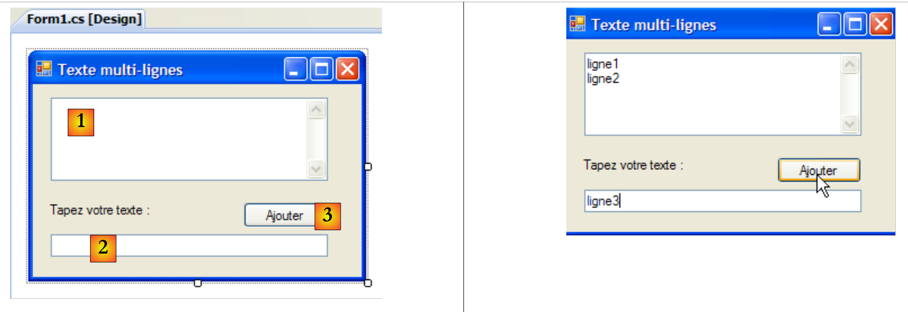 |
قائمة عناصر التحكم هي كما يلي:
رقم | النوع | الاسم | الدور |
1 | مربع نص | textBoxLignes | حقل إدخال متعدد الأسطر Multiline=true، ScrollBars=Both، AcceptReturn=True، AcceptTab=True |
2 | مربع النص | textBoxLigne | حقل إدخال أحادي السطر |
3 | زر | buttonAjouter | يضيف المحتويات من 2 إلى 1 |
لجعل TextBox متعدد الأسطر، قم بتعيين خصائص عنصر التحكم التالية:
لقبول عدة أسطر من النص | |
لطلب أن يحتوي عنصر التحكم على أشرطة تمرير (أفقي، عمودي، كلاهما) أو لا (لا شيء) | |
إذا كان يساوي true، فسيؤدي مفتاح Enter إلى الانتقال إلى السطر | |
إذا كان صحيحًا، فسيؤدي مفتاح Tab إلى إنشاء علامة تبويب في النص |
يسمح التطبيق بكتابة الأسطر مباشرة في [1] أو إضافتها عبر [2] و[3].
رمز التطبيق هو كما يلي:
using System.Windows.Forms;
using System;
namespace Chap5 {
public partial class Form1 : Form {
public Form1() {
InitializeComponent();
}
private void buttonAjouter_Click(object sender, System.EventArgs e) {
// add the content of textBoxLigne to that of textBoxLignes
textBoxLignes.Text += textBoxLigne.Text+Environment.NewLine;
textBoxLigne.Text = "";
}
private void Form1_Shown(object sender, EventArgs e) {
// focus on the input field
textBoxLigne.Focus();
}
}
}
- السطر 18: عند عرض النموذج (evt Shown)، يتم التركيز على حقل الإدخال textBoxLigne
- السطر 10: إدارة النقر على زر [Add]
- السطر 12: يتم إضافة نص حقل الإدخال textBoxLigne إلى النص الموجود في حقل الإدخال textBoxLignes متبوعًا بسطر جديد.
- السطر 13: يتم حذف حقل الإدخال textBoxLigne
7.2.3. القوائم المنسدلة ComboBox
نقوم بإنشاء النموذج التالي:
 |
رقم | النوع | الاسم | الدور |
1 | مربع القائمة المنسدلة | comboNombres | يحتوي على سلاسل أحرف DropDownStyle=DropDownList |
مكون ComboBox هو قائمة منسدلة مع حقل إدخال: يمكن للمستخدم إما تحديد عنصر في (2) أو كتابة نص في (1). هناك ثلاثة أنواع من ComboBox يتم تعيينها بواسطة الخاصية DropDownStyle :
قائمة غير منسدلة مع منطقة تحرير | |
قائمة منسدلة مع منطقة تحرير | |
قائمة منسدلة بدون منطقة تحرير |
بشكل افتراضي، يكون نوع ComboBox هو DropDown.
فئة ComboBox من مصنع واحد:
ينشئ قائمة منسدلة فارغة |
تتوفر عناصر ComboBox في الخاصية Items :
هذه خاصية مفهرسة، حيث تشير Items[i] إلى العنصر i في Combo. وهي خاصية للقراءة فقط.
أو C عبارة عن قائمة منسدلة و C.Items هي قائمة عناصرها. لدينا الخصائص التالية:
عدد عناصر القائمة المنسدلة | |
العنصر i من القائمة المنسدلة | |
يضيف الكائن o كآخر عنصر في القائمة المنسدلة | |
يضيف مصفوفة من الكائنات في نهاية القائمة المنسدلة | |
يضيف الكائن o إلى الموضع i في القائمة المنسدلة | |
يزيل العنصر i من القائمة المنسدلة | |
يزيل الكائن o من القائمة المنسدلة | |
يحذف جميع عناصر القائمة المنسدلة | |
يعرض الموضع i للكائن o في القائمة المنسدلة | |
مؤشر العنصر المحدد | |
العنصر المحدد | |
النص المعروض للعنصر المحدد | |
النص المعروض للعنصر المحدد |
قد يكون من المفاجئ أن يحتوي مربع القائمة المنسدلة على كائنات بينما يعرض سلاسل نصية بصريًا. إذا كان مربع القائمة المنسدلة (ComboBox) يحتوي على كائن obj، فإنه يعرض السلسلة obj.ToString(). تذكر أن كل كائن لديه خاصية ToString موروثة من الكائن والتي تعرض سلسلة أحرف "تمثل" الكائن.
العنصر المحدد في القائمة المنسدلة C هو C.SelectedItem أو C.Items[C.SelectedIndex] حيث C.SelectedIndex هو رقم العنصر المحدد، بدءًا من الصفر للعنصر الأول. يمكن الحصول على النص المحدد بعدة طرق: C.SelectedItem.Text، C.Text
عند تحديد عنصر من القائمة المنسدلة، يتم تشغيل الحدث SelectedIndexChanged، والذي يمكن استخدامه لإعلام المستخدم بتغيير في التحديد في القائمة المنسدلة. في التطبيق التالي، نستخدم هذا الحدث لعرض العنصر الذي تم تحديده في القائمة.
 |
فيما يلي كود التطبيق:
using System.Windows.Forms;
namespace Chap5 {
public partial class Form1 : Form {
private int previousSelectedIndex=0;
public Form1() {
InitializeComponent();
// combo filling
comboBoxNombres.Items.AddRange(new string[] { "zéro", "un", "deux", "trois", "quatre" });
// select item no. 0
comboBoxNombres.SelectedIndex = 0;
}
private void comboBoxNombres_SelectedIndexChanged(object sender, System.EventArgs e) {
int newSelectedIndex = comboBoxNombres.SelectedIndex;
if (newSelectedIndex != previousSelectedIndex) {
// the selected item has changed - it is displayed
MessageBox.Show(string.Format("Elément sélectionné : ({0},{1})", comboBoxNombres.Text, newSelectedIndex), "Combo", MessageBoxButtons.OK, MessageBoxIcon.Information);
// note the new index
previousSelectedIndex = newSelectedIndex;
}
}
}
}
- السطر 5: تخزن متغير previousSelectedIndex آخر مؤشر تم تحديده في القائمة المنسدلة
- السطر 10: ملء القائمة المنسدلة بمصفوفة من سلاسل الأحرف
- السطر 12: يتم تحديد العنصر الأول
- السطر 15: الطريقة التي يتم تنفيذها في كل مرة يختار فيها المستخدم عنصرًا من القائمة المنسدلة. على عكس ما قد يوحي به الاسم، يحدث هذا الحدث حتى لو كان العنصر المحدد هو نفسه العنصر السابق.
- السطر 16: يسجل مؤشر العنصر المحدد
- السطر 17: إذا كان مختلفًا عما سبق
- السطر 19: يعرض رقم العنصر المحدد ونصه
- السطر 21: تسجيل الفهرس الجديد
7.2.4. مكون ListBox
نقترح إنشاء الواجهة التالية:
 |
مكونات هذه النافذة هي كما يلي:
رقم | النوع | الاسم | الدور/الخصائص |
0 | نموذج | نموذج1 | نموذج FormBorderStyle=FixedSingle (إطار غير قابل لتغيير الحجم) |
1 | مربع النص | مربع إدخال النص | حقل الإدخال |
2 | زر | زر الإضافة | زر لإضافة محتويات حقل الإدخال [1] إلى القائمة [3] |
3 | ListBox | listBox1 | القائمة 1 SelectionMode=MultiExtended : |
4 | مربع القائمة | listBox2 | القائمة 2 وضع التحديد=متعدد بسيط : |
5 | زر | button1to2 | ينقل العناصر المحددة من القائمة 1 إلى القائمة 2 |
6 | زر | button2to1 | يقوم بالعكس |
7 | زر | buttonEffacer1 | يفرغ القائمة 1 |
8 | زر | buttonEffacer2 | إفراغ القائمة 2 |
تحتوي مكونات ListBox على وضع تحديد لعناصرها يتم تعريفه بواسطة خاصيتها SelectionMode :
يمكن تحديد عنصر واحد فقط | |
يمكن التحديد المتعدد: يؤدي الضغط المستمر على مفتاح SHIFT والنقر على عنصر إلى توسيع التحديد من العنصر المحدد سابقًا إلى العنصر الحالي. | |
متعدد التحديد: يمكن تحديد عنصر أو إلغاء تحديده بنقرة بالماوس أو بالضغط على مفتاح المسافة. |
- يكتب المستخدم النص في الحقل 1 ويضيفه إلى القائمة 1 باستخدام زر "إضافة" (2). ثم يتم إفراغ حقل الإدخال (1) ويمكن للمستخدم إضافة عنصر جديد.
- يمكنه نقل العناصر من قائمة إلى أخرى عن طريق تحديد العنصر المراد نقله في إحدى القوائم واختيار زر النقل المناسب 5 أو 6. يتم إضافة العنصر المنقول إلى نهاية قائمة الوجهة وإزالته من قائمة المصدر.
- يمكنه النقر المزدوج على عنصر في القائمة 1. ثم يتم نقل هذا العنصر إلى مربع التحرير وإزالته من القائمة 1.
يتم تشغيل الأزرار أو إيقافها وفقًا للقواعد التالية:
- لا يضيء زر "إضافة" إلا إذا كان حقل الإدخال يحتوي على نص غير فارغ
- لا يضيء الزر [5] لنقل القائمة 1 إلى القائمة 2 إلا إذا كان هناك عنصر محدد في القائمة 1
- لا يضيء الزر [6] لنقل القائمة 2 إلى القائمة 1 إلا إذا كان هناك عنصر محدد في القائمة 2
- لا تضيء الأزرار [7] و[8] لحذف القائمتين 1 و2 إلا إذا كانت القائمة المراد حذفها تحتوي على عناصر.
في ظل الشروط المذكورة أعلاه، يجب إيقاف تشغيل جميع الأزرار عند بدء تشغيل التطبيق. هذه هي الأزرار "Enabled" التي يجب وضعها في وضع "false". يمكن القيام بذلك في مرحلة التصميم، مما سيؤدي إلى إنشاء الكود المقابل في InitializeComponent أو القيام بذلك بأنفسنا في أداة الإنشاء كما هو موضح أدناه:
public Form1() {
InitializeComponent();
// --- initialisations complémentaires ---
// on inhibe un certain nombre de boutons
buttonAjouter.Enabled = false;
button1vers2.Enabled = false;
button2vers1.Enabled = false;
buttonEffacer1.Enabled = false;
buttonEffacer2.Enabled = false;
}
يتم التحكم في حالة زر "إضافة" من خلال محتوى حقل الإدخال. هذا هو TextChanged الذي يسمح لنا بتتبع التغييرات في هذا المحتوى:
private void textBoxSaisie_TextChanged(object sender, System.EventArgs e) {
// the content of textBoxSaisie has changed
// the Add button is only lit if the entry is non-empty
buttonAjouter.Enabled = textBoxSaisie.Text.Trim() != "";
}
تعتمد حالة أزرار النقل على ما إذا كان قد تم تحديد عنصر في القائمة التي تتحكم فيها أم لا:
private void listBox1_SelectedIndexChanged(object sender, System.EventArgs e) {
// an item has been selected
// switch on the 1 to 2 transfer button
button1vers2.Enabled = true;
}
private void listBox2_SelectedIndexChanged(object sender, System.EventArgs e) {
// an item has been selected
// switch on the 2 to 1 transfer button
button2vers1.Enabled = true;
}
الرمز المرتبط بالنقر على زر "إضافة" هو كما يلي:
private void buttonAjouter_Click(object sender, System.EventArgs e) {
// add a new element to list 1
listBox1.Items.Add(textBoxSaisie.Text.Trim());
// raz de la saisie
textBoxSaisie.Text = "";
// List 1 is not empty
buttonEffacer1.Enabled = true;
// return focus to input box
textBoxSaisie.Focus();
}
لاحظ استخدام Focus للتركيز على عنصر تحكم في النموذج. الكود المرتبط بالنقر على زر Delete :
private void buttonEffacer1_Click(object sender, System.EventArgs e) {
// delete list 1
listBox1.Items.Clear();
// delete button
buttonEffacer1.Enabled = false;
}
private void buttonEffacer2_Click(object sender, System.EventArgs e) {
// delete list 2
listBox2.Items.Clear();
// delete button
buttonEffacer2.Enabled = false;
}
الكود الخاص بنقل العناصر المحددة من قائمة إلى أخرى:
private void button1vers2_Click(object sender, System.EventArgs e) {
// transfer the item selected in List 1 to List 2
transfert(listBox1, button1vers2, buttonEffacer1, listBox2, button2vers1, buttonEffacer2);
}
private void button2vers1_Click(object sender, System.EventArgs e) {
// transfer the item selected in List 2 to List 1
transfert(listBox2, button2vers1, buttonEffacer2, listBox1, button1vers2, buttonEffacer1);
}
تقوم الطريقتان المذكورتان أعلاه بتفويض نقل العناصر المحددة من قائمة إلى أخرى إلى طريقة خاصة واحدة تسمى transfer :
// transfer
private void transfert(ListBox l1, Button button1vers2, Button buttonEffacer1, ListBox l2, Button button2vers1, Button buttonEffacer2) {
// transfer selected items from list l1 to list l2
for (int i = l1.SelectedIndices.Count - 1; i >= 0; i--) {
// index of selected item
int index = l1.SelectedIndices[i];
// addition to l2
l2.Items.Add(l1.Items[index]);
// deletion in l1
l1.Items.RemoveAt(index);
}
// delete buttons
buttonEffacer2.Enabled = l2.Items.Count != 0;
buttonEffacer1.Enabled = l1.Items.Count != 0;
// transfer buttons
button1vers2.Enabled = false;
}
- السطر ب: تتلقى طريقة transfer ستة معلمات:
- إشارة إلى القائمة التي تحتوي على العناصر المحددة والتي تسمى هنا l1. عند تشغيل التطبيق، تكون l1 إما listBox1 أو listBox2. تظهر أمثلة على الاستدعاءات في السطرين 3 و 8 من إجراءات النقل buttonXversY_Click.
- مرجع إلى زر transfer المرتبط بالقائمة l1. على سبيل المثال، إذا كانت l1 هي listBox2، فستكون button2to1 (انظر استدعاء السطر 8)
- إشارة إلى زر حذف القائمة l1. على سبيل المثال، إذا كانت l1 هي listBox1، فستكون buttonEffacer1 (انظر استدعاء السطر 3)
- الإشارات الثلاث الأخرى مشابهة ولكنها تشير إلى l2.
- السطر d: تمثل مجموعة [ListBox].SelectedIndices مؤشرات العناصر المحددة في المكون [ListBox]. هذا هو:
- [ListBox].SelectedIndices.Count هو عدد العناصر في هذه المجموعة
- [ListBox].SelectedIndices[i] هو العنصر رقم i في هذه المجموعة
نستعرض المجموعة بترتيب عكسي، بدءًا من النهاية وانتهاءً بالبداية. سنشرح السبب.
- السطر f: مؤشر عنصر محدد في القائمة l1
- السطر h: يتم إضافة هذا العنصر إلى القائمة l2
- السطر j: وتم حذفه من القائمة l1. ونظرًا لحذفه، لم يعد محددًا. سيتم إعادة حساب المجموعة l1.SelectedIndices للسطر d. وستفقد العنصر الذي تم حذفه للتو. وستتغير أرقام جميع العناصر اللاحقة من n إلى n-1.
- إذا كانت الحلقة في السطر (d) تصاعدية وقامت للتو بمعالجة العنصر رقم 0، فستقوم بعد ذلك بمعالجة العنصر رقم 1. أو العنصر الذي كان رقم 1 قبل حذف العنصر رقم 0، سيصبح بعد ذلك رقم 0. وسيتم نسيانه بعد ذلك من قبل الحلقة.
- إذا كانت الحلقة في السطر (d) تنازلية وقامت للتو بمعالجة العنصر رقم n، فستقوم بعد ذلك بمعالجة العنصر رقم n-1. بعد حذف العنصر رقم n، لا يتغير رقم العنصر رقم n-1. لذلك تتم معالجته في الحلقة التالية.
- السطور m-n: تعتمد حالة أزرار [حذف] على وجود عناصر في القوائم المرتبطة أم لا
- السطر p: لم تعد القائمة l2 تحتوي على عناصر محددة: قم بإيقاف تشغيل زر النقل الخاص بها.
7.2.5. مربعات الاختيار CheckBox، أزرار الاختيار ButtonRadio
نقترح كتابة التطبيق التالي:
 |
مكونات النافذة هي كما يلي:
رقم | النوع | الاسم | الدور |
1 | مربع المجموعة cf [6] | groupBox1 | حاوية مكونات. يمكن سحب مكونات أخرى إليها. Text=أزرار الاختيار |
2 | زر الاختيار | زر الاختيار1 radioButton2 زر الاختيار 3 | 3 أزرار اختيار - radioButton1 له Checked=True و Text=1 - radioButton2 له Text=2 - radioButton3 له Text=3 أزرار الاختيار الموجودة في نفس الحاوية، هنا GroupBox، حصرية عن بعضها البعض: يتم إضاءة واحد منها فقط. |
3 | GroupBox | groupBox2 | |
4 | مربع الاختيار | مربع الاختيار 1 مربع الاختيار 2 مربع الاختيار 3 | 3 مربعات اختيار. مربع الاختيار 1 له القيمة Checked=True والنص Text=A - مربع الاختيار 2 له النص Text=B - مربع الاختيار 3 له النص Text=C |
5 | ListBox | listBoxValeurs | قائمة تعرض قيم أزرار الاختيار ومربعات الاختيار كلما حدث تغيير. |
6 | يوضح مكان العثور على الحاوية GroupBox |
الحدث المهم لهذه العناصر الستة هو CheckChanged الذي يشير إلى أن حالة مربع الاختيار أو زر الاختيار قد تغيرت. في كلتا الحالتين، يتم تمثيل هذه الحالة بواسطة الخاصية المنطقية Checked التي تعني فعليًا أن العنصر محدد. سنستخدم هنا طريقة واحدة فقط للتعامل مع جميع الأحداث الستة CheckChanged، وهي الطريقة poster. لضمان إدارة الأحداث الستة CheckChanged بواسطة نفس الطريقة poster، يمكنك اتباع الخطوات التالية:
حدد المكون radioButton1 وانقر عليه بزر الماوس الأيمن للوصول إلى خصائصه:
 |
في الأحداث [1]، نربط الدالة poster [2] بالحدث CheckChanged. وهذا يعني أننا نريد أن تتم معالجة النقر على الخيار A1 بواسطة دالة تسمى poster. يقوم Visual Studio تلقائيًا بإنشاء الدالة poster في نافذة الكود:
private void affiche(object sender, EventArgs e) {
}
الطريقة poster هي EventHandler.
بالنسبة للمكونات الخمسة الأخرى، نقوم بنفس الشيء. على سبيل المثال، دعونا نختار الخيار CheckBox1 وأحداثه [3]. عند مواجهة الحدث Click، لدينا قائمة منسدلة [4] تحتوي على الطرق الموجودة التي يمكنها معالجة هذا الحدث. في هذه الحالة، الطريقة poster فقط. نختارها. نكرر هذه العملية لجميع المكونات الأخرى.
تم إنشاء كود الطريقة InitializeComponent. تم إعلان poster كمعالج للأحداث الستة CheckedChanged على النحو التالي:
this.radioButton1.CheckedChanged += new System.EventHandler(this.affiche);
this.radioButton2.CheckedChanged += new System.EventHandler(this.affiche);
this.radioButton3.CheckedChanged += new System.EventHandler(this.affiche);
this.checkBox1.CheckedChanged += new System.EventHandler(this.affiche);
this.checkBox2.CheckedChanged += new System.EventHandler(this.affiche);
this.checkBox3.CheckedChanged += new System.EventHandler(this.affiche);
يتم إكمال طريقة poster على النحو التالي:
private void affiche(object sender, System.EventArgs e) {
// displays radio button or checkbox status
// is it a checkbox?
if (sender is CheckBox) {
CheckBox chk = (CheckBox)sender;
listBoxvaleurs.Items.Add(chk.Name + "=" + chk.Checked);
}
// is it a radiobutton?
if (sender is RadioButton) {
RadioButton rdb = (RadioButton)sender;
listBoxvaleurs.Items.Add(rdb.Name + "=" + rdb.Checked);
}
}
الصيغة
if (sender is CheckBox) {
للتحقق من أن نوع المرسل هو CheckBox. وهذا يسمح لنا بعد ذلك بتحويل النوع إلى النوع الدقيق للمرسل. تقوم الطريقة poster بكتابة اسم المكون الذي تسبب في الحدث وقيمة خاصيته Checked في listBoxValeurs. أثناء وقت التشغيل [7]، يؤدي النقر على زر الاختيار إلى تشغيل حدثين CheckChanged: أحدهما على الزر القديم المحدد، والذي يتغير إلى "غير محدد"، والآخر على الزر الجديد، والذي يتغير إلى "محدد".
7.2.6. محولات ScrollBar
هناك عدة أنواع من أشرطة التمرير: محرك الأفقية (HscrollBar)، شريط التمرير الرأسي (VscrollBar)، المزيد (NumericUpDown). |
دعونا نقوم بتشغيل التطبيق التالي:
 |
رقم | النوع | الاسم | الدور |
1 | hScrollBar | hScrollBar1 | محرك أفقي |
2 | hScrollBar | hScrollBar2 | متغير أفقي يتبع تغيرات المتغير 1 |
3 | التسمية | labelValeurHS1 | يعرض قيمة المحرك الأفقي |
4 | NumericUpDown | رقمي لأعلى ولأسفل 2 | لتعيين قيمة وحدة التحكم 2 |
يتيح شريط التمرير العكسي للمستخدم اختيار قيمة من نطاق من القيم الصحيحة التي يمثلها "نطاق" محرك الأقراص الذي يتحرك عليه المؤشر. وتتوفر قيمة محرك الأقراص في خاصية Value.
- بالنسبة للمحرك الأفقي، يمثل الطرف الأيسر القيمة الدنيا للنطاق، والطرف الأيمن القيمة القصوى، والمؤشر القيمة المحددة حاليًا. بالنسبة للمحرك الرأسي، يمثل الطرف العلوي القيمة الدنيا، والطرف السفلي القيمة القصوى. يتم تمثيل هذه القيم بواسطة الخصائص Minimum و Maximum، والقيم الافتراضية هي 0 و 100.
- يؤدي النقر على طرفي المحرك إلى تغيير القيمة بمقدار وحدة واحدة (موجبة أو سالبة) اعتمادًا على الطرف الذي تم النقر عليه SmallChange والذي يبلغ افتراضيًا 1.
- يؤدي النقر على أي من جانبي المؤشر إلى تغيير القيمة بمقدار وحدة واحدة (موجبة أو سالبة)، اعتمادًا على الطرف الذي تم النقر عليه LargeChange والذي تبلغ قيمته الافتراضية 10.
- عند النقر على الطرف العلوي لمزج الإضاءة العمودي، تنخفض قيمته. قد يكون هذا مفاجئًا للمستخدم العادي، الذي يتوقع عادةً أن "ترتفع" القيمة. يتم حل هذه المشكلة عن طريق إعطاء قيمة سالبة للخصائص SmallChange و LargeChange
- هذه الخصائص الخمس (Value، Minimum، Maximum، SmallChange، LargeChange) متاحة للقراءة والكتابة.
- الحدث الرئيسي للمحرك هو الذي يشير إلى تغيير في القيمة: Scroll.
يشبه المكون NumericUpDown مكون محرك الأقراص: فهو يحتوي أيضًا على الخصائص التالية: Minimum و Maximum و Value، والقيم الافتراضية هي 0 و 100 و 0. ولكن هنا، يتم عرض القيمة (Value) في مربع إدخال يمثل جزءًا لا يتجزأ من عنصر التحكم. يمكن للمستخدم نفسه تعديل هذه القيمة ما لم يتم تعيين خاصية ReadOnly إلى true. يتم تعيين قيمة الزيادة بواسطة Incrementally، والقيمة الافتراضية هي 1. الحدث الرئيسي لمكون NumericUpDown هو الذي يشير إلى تغيير في القيمة: الحدث ValueChanged
رمز التطبيق هو كما يلي:
using System.Windows.Forms;
namespace Chap5 {
public partial class Form1 : Form {
public Form1() {
InitializeComponent();
// set the characteristics of drive 1
hScrollBar1.Value = 7;
hScrollBar1.Minimum = 1;
hScrollBar1.Maximum = 130;
hScrollBar1.LargeChange = 11;
hScrollBar1.SmallChange = 1;
// drive 2 is given the same characteristics as drive 1
hScrollBar2.Value = hScrollBar1.Value;
hScrollBar2.Minimum = hScrollBar1.Minimum;
hScrollBar2.Maximum = hScrollBar1.Maximum;
hScrollBar2.LargeChange = hScrollBar1.LargeChange;
hScrollBar2.SmallChange = hScrollBar1.SmallChange;
// ditto for the incrementer
numericUpDown2.Value = hScrollBar1.Value;
numericUpDown2.Minimum = hScrollBar1.Minimum;
numericUpDown2.Maximum = hScrollBar1.Maximum;
numericUpDown2.Increment = hScrollBar1.SmallChange;
// the Label is given the value of drive 1
labelValeurHS1.Text = hScrollBar1.Value.ToString();
}
private void hScrollBar1_Scroll(object sender, ScrollEventArgs e) {
// value change on drive 1
// its value is passed on to drive 2 and to the label
hScrollBar2.Value = hScrollBar1.Value;
labelValeurHS1.Text = hScrollBar1.Value.ToString();
}
private void numericUpDown2_ValueChanged(object sender, System.EventArgs e) {
// incrementer has changed value
// set the value of controller 2
hScrollBar2.Value = (int)numericUpDown2.Value;
}
}
}
7.3. الأحداث الماوس
عند الرسم في حاوية، من المهم معرفة موضع الماوس حتى يمكن، على سبيل المثال، عرض نقطة عند النقر. تحرك الماوس يطلق أحداثًا في الحاوية التي يتحرك فيها.
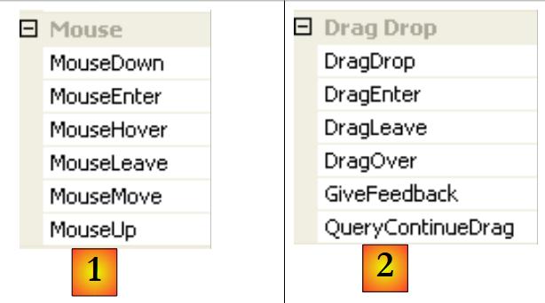 |
- [1]: الأحداث التي تحدث عند تحريك الماوس فوق نموذج أو عنصر تحكم
- [2]: الأحداث التي تحدث أثناء السحب والإفلات (Drag'nDrop)
دخل الماوس إلى مجال عنصر التحكم | |
لقد غادر الماوس للتو مجال عنصر التحكم | |
الماوس يتحرك داخل نطاق عنصر التحكم | |
الضغط على زر الماوس الأيسر | |
حرر زر الماوس الأيسر | |
يقوم المستخدم بإسقاط كائن على عنصر التحكم | |
يدخل المستخدم مجال عنصر التحكم عن طريق سحب كائن | |
يغادر المستخدم نطاق عنصر التحكم عن طريق سحب كائن | |
يمر المستخدم فوق نطاق عنصر التحكم عن طريق سحب كائن |
إليك تطبيق لمساعدتك على فهم متى تحدث أحداث الماوس المختلفة:
 |
رقم | النوع | الاسم | الدور |
1 | التسمية | lblPositionSouris | لعرض موضع الماوس في النموذج 1 أو القائمة 2 أو الزر 3 |
2 | ListBox | listBoxEvts | لعرض أحداث الماوس بخلاف MouseMove |
3 | Button | buttonEffacer | لحذف محتويات 2 |
لتتبع حركات الماوس على عناصر التحكم الثلاثة، نكتب معالجًا واحدًا، وهو poster :
 |
فيما يلي كود الإجراء poster:
private void affiche(object sender, MouseEventArgs e) {
// mvt mouse - displays its (X,Y) coordinates
labelPositionSouris.Text = "(" + e.X + "," + e.Y + ")";
}
في كل مرة يدخل فيها الماوس نطاق عنصر تحكم، يتغير نظام إحداثياته. نقطة الأصل (0,0) هي الزاوية العلوية اليسرى لعنصر التحكم الذي يقع عليه. لذا، أثناء التشغيل، عندما تحرك الماوس من النموذج إلى الزر، يمكنك رؤية التغيير في الإحداثيات بوضوح. لرؤية هذه التغييرات في نطاق الماوس بشكل أفضل، يمكنك استخدام عناصر التحكم Cursor [1] :
 |
تُستخدم هذه الخاصية لتعيين شكل مؤشر الماوس عند دخوله إلى نطاق عنصر التحكم. في مثالنا، قمنا بتعيين المؤشر على Default للنموذج نفسه [2]، و Hand للقائمة 2 [3]، و Cross للزر 3 [4].
علاوة على ذلك، لاكتشاف دخول الماوس وخروجه من القائمة 2، نقوم بمعالجة الأحداث MouseEnter و MouseLeave من نفس القائمة:
private void listBoxEvts_MouseEnter(object sender, System.EventArgs e) {
// the event
listBoxEvts.Items.Insert(0, string.Format("MouseEnter à {0:hh:mm:ss}",DateTime.Now));
}
private void listBoxEvts_MouseLeave(object sender, EventArgs e) {
// the event
listBoxEvts.Items.Insert(0, string.Format("MouseLeave à {0:hh:mm:ss}", DateTime.Now));
}
لمعالجة النقرات على النموذج، نقوم بمعالجة الحدثين التاليين: MouseDown و MouseUp:
private void listBoxEvts_MouseDown(object sender, MouseEventArgs e) {
// the event
listBoxEvts.Items.Insert(0, string.Format("MouseDown à {0:hh:mm:ss}", DateTime.Now));
}
private void listBoxEvts_MouseUp(object sender, MouseEventArgs e) {
// the event
listBoxEvts.Items.Insert(0, string.Format("MouseUp à {0:hh:mm:ss}", DateTime.Now));
}
- السطران 3 و 8: يتم وضع الرسائل في الموضع الأول في ListBox بحيث يتم سرد الأحداث الأحدث أولاً.
 |
أخيرًا، رمز معالج النقر على الزر "حذف":
private void buttonEffacer_Click(object sender, EventArgs e) {
listBoxEvts.Items.Clear();
}
7.4. إنشاء نافذة مع قائمة
الآن دعونا نرى كيفية إنشاء نافذة مع قائمة. سننشئ النافذة التالية:
 |
لإنشاء قائمة، حدد "MenuStrip" في شريط "Menus & Toolbars":
 |
- [1]: اختيار المكون [MenuStrip]
- [2]: تظهر قائمة على النموذج، مع مربعات فارغة تحمل العنوان "Type Here". كل ما عليك فعله هو تحديد خيارات القائمة المختلفة.
- [3]: تمت كتابة تسمية "خيار أ". ننتقل إلى التسمية [4].
- [5]: تم إدخال تسميات الخيار A. انتقل إلى التسمية [6]
 |
- [6]: خيارات B الأولى
- [7]: تحت B1، يتم استخدام فاصل. يتوفر هذا في قائمة منسدلة مرتبطة بالنص "اكتب هنا"
- [8]: لإنشاء قائمة فرعية، استخدم السهم [8] واكتب القائمة الفرعية في [9]
كل ما تبقى هو تسمية المكونات المختلفة للنموذج:
 |
رقم | النوع | الاسم (الأسماء) | الدور |
1 | التسمية | labelStatut | لعرض نص عنصر قائمة الخيارات الذي تم النقر عليه |
2 | toolStripMenuItem | toolStripMenuItemOptionsA عنصر قائمة شريط الأدوات A1 toolStripMenuItemA2 عنصر قائمة شريط الأدوات A3 | خيارات القائمة ضمن الخيار الرئيسي "خيارات A" |
3 | عنصر قائمة شريط الأدوات | عنصر قائمة شريط الأدوات خيارات B toolStripMenuItemB1 عنصر قائمة شريط الأدوات B2 عنصر قائمة شريط الأدوات B3 | خيارات القائمة ضمن الخيار الرئيسي "خيارات ب" |
4 | عنصر قائمة شريط الأدوات | عنصر قائمة شريط الأدوات B31 toolStripMenuItemB32 | خيارات القائمة ضمن الخيار الرئيسي "B3" |
خيارات القائمة هي عناصر تحكم مثل المكونات المرئية الأخرى، ولها خصائص وأحداث. على سبيل المثال، خصائص عنصر قائمة الخيارات A1 هي كما يلي:
 |
يتم استخدام خاصيتين في مثالنا:
اسم عنصر التحكم في القائمة | |
تسمية قائمة الخيارات |
في بنية القائمة، حدد الخيار A1 وانقر بزر الماوس الأيمن للوصول إلى خصائص عنصر التحكم:
 |
في الأحداث [1]، نربط الخيار [2] بالحدث Click. وهذا يعني أننا نريد أن تتم معالجة النقر على الخيار A1 بواسطة طريقة تسمى poster. يقوم Visual Studio تلقائيًا بإنشاء الخيار poster في نافذة الكود:
private void affiche(object sender, EventArgs e) {
}
في هذه الطريقة، سنقوم ببساطة بعرض الخاصية Text لعنصر قائمة الخيارات الذي تم النقر عليه في التسمية labelStatut:
private void affiche(object sender, EventArgs e) {
// displays the name of the selected submenu in the TextBox
labelStatut.Text = ((ToolStripMenuItem)sender).Text;
}
مصدر نوع مرسل الحدث هو object. خيارات القائمة هي ToolStripMenuItem، لذا نحن مضطرون لتحويل نوع الكائن إلى ToolStripMenuItem.
بالنسبة لجميع خيارات القائمة، نقوم بتعيين معالج النقر إلى الأسلوب poster [3,4].
دعونا نشغل التطبيق ونختار عنصرًا من القائمة:
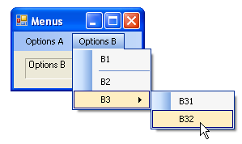 | 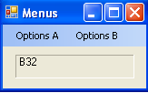 |
7.5. المكونات غير المرئية
ننتقل الآن إلى عدد من المكونات غير المرئية: تُستخدم هذه المكونات أثناء التصميم، ولكنها لا تظهر في وقت التشغيل.
7.5.1. مربعات الحوار OpenFileDialog و SaveFileDialog
سنقوم بإنشاء التطبيق التالي:
 |
العناصر التحكمية هي كما يلي:
رقم | النوع | الاسم | الدور |
1 | مربع نص | TextBoxLignes | نص مكتوب من قبل المستخدم أو تم تحميله من ملف MultiLine=True، ScrollBars=Both، AccepReturn=True، AcceptTab=True |
2 | زر | buttonSauvegarder | يحفظ نص [1] في ملف نصي |
3 | زر | زر الشاحن | يحمل محتويات ملف نصي إلى [1] |
4 | زر | buttonEffacer | يحذف محتويات [1] |
5 | SaveFileDialog | saveFileDialog1 | مكون لاختيار اسم وموقع ملف النسخ الاحتياطي لـ [1]. يتم أخذ هذا المكون من شريط الأدوات [7] ووضعه ببساطة على النموذج. ثم يتم حفظه، ولكنه لا يشغل أي مساحة على النموذج. إنه مكون غير مرئي. |
6 | OpenFileDialog | openFileDialog1 | لتحديد الملف المراد تحميله إلى [1]. |
الرمز المرتبط بـ "حذف" بسيط:
private void buttonEffacer_Click(object sender, EventArgs e) {
// we put the empty string in the TexBox
textBoxLignes.Text = "";
}
سنستخدم الخصائص والطرق التالية لـ SaveFileDialog :
الحقل | النوع | الدور |
الخاصية | أنواع الملفات المتوفرة في القائمة المنسدلة "نوع الملف" في | |
الخاصية | رقم نوع الملف المقترح افتراضيًا في القائمة أعلاه. يبدأ من 0. | |
الخاصية | المجلد المعروض أصلاً لحفظ الملف | |
الخاصية | اسم ملف النسخ الاحتياطي المحدد من قبل المستخدم | |
طريقة | طريقة تعرض مربع حوار الحفظ. تُرجع نتيجة من النوع DialogResult. |
تعرض الدالة ShowDialog مربع حوار مشابهً للمربع الموضح أدناه:
 |
قائمة منسدلة تم إنشاؤها من Filter. يتم تعيين نوع الملف الافتراضي بواسطة FilterIndex | |
الملف الحالي، الذي يتم تعيينه بواسطة InitialDirectory إذا تم تعيين هذه الخاصية | |
اسم الملف الذي اختاره المستخدم أو كتبه مباشرة. سيكون متاحًا في FileName | |
أزرار "حفظ"/"إلغاء". إذا تم استخدام Register، فإن ShowDialog تجعل النتيجة DialogResult.OK |
يمكن كتابة إجراء الحماية على النحو التالي:
private void buttonSauvegarder_Click(object sender, System.EventArgs e) {
// save the input box in a text file
// set the savefileDialog1 dialog box
saveFileDialog1.InitialDirectory = Application.ExecutablePath;
saveFileDialog1.Filter = "Fichiers texte (*.txt)|*.txt|Tous les fichiers (*.*)|*.*";
saveFileDialog1.FilterIndex = 0;
// display the dialog box and retrieve the result
if (saveFileDialog1.ShowDialog() == DialogResult.OK) {
// retrieve the file name
string nomFichier = saveFileDialog1.FileName;
StreamWriter fichier = null;
try {
// open the file for writing
fichier = new StreamWriter(nomFichier);
// we write the text inside
fichier.Write(textBoxLignes.Text);
} catch (Exception ex) {
// problem
MessageBox.Show("Problème à l'écriture du fichier (" +
ex.Message + ")", "Erreur", MessageBoxButtons.OK, MessageBoxIcon.Error);
return;
} finally {
// close the file
if (fichier != null) {
fichier.Dispose();
}
}
}
}
- السطر 4: تعيين الملف الأولي (InitialDirectory) إلى الملف (Application.ExecutablePath) الذي يحتوي على الملف القابل للتنفيذ للتطبيق.
- السطر 5: تعيين أنواع الملفات المراد عرضها. لاحظ صيغة التصفية: filter1|filter2|..|filtren مع نموذج filteri= Text|file. هنا سيتمكن المستخدم من الاختيار بين الملفات التالية *.txt و *.*.
- السطر 6: تعيين نوع الملف الذي سيتم عرضه أولاً للمستخدم. هنا يشير المؤشر 0 إلى ملفات *.txt.
- السطر 8: يتم عرض مربع الحوار واسترداد نتيجته. أثناء عرض مربع الحوار، لا يمكن للمستخدم الوصول إلى النموذج الرئيسي (مربع حوار نمطي). يحدد المستخدم اسم الملف المراد حفظه ويخرج من مربع الحوار إما بالنقر على زر "تسجيل" أو عبر زر "إلغاء" أو بإغلاق المربع. تكون نتيجة ShowDialog هي DialogResult.OK فقط إذا استخدم المستخدم زر "تسجيل" للخروج من مربع الحوار.
- بمجرد الانتهاء من ذلك، يصبح اسم الملف المراد إنشاؤه موجودًا الآن في كائن FileName saveFileDialog1. وهذا يعيدنا إلى الطريقة التقليدية لإنشاء ملف نصي. محتويات TextBox : textBoxLignes.Text مع إدارة أي استثناءات قد تحدث.
تشبه فئة OpenFileDialog إلى حد كبير فئة SaveFileDialog. سنستخدم نفس الطرق والخصائص المذكورة أعلاه. تعرض الطريقة ShowDialog مربع حوار مشابهًا للمربع أدناه:
 |
قائمة منسدلة تم إنشاؤها من Filter. يتم تعيين نوع الملف الافتراضي بواسطة FilterIndex | |
الملف الحالي، الذي يتم تحديده بواسطة InitialDirectory إذا تم تعيين هذه الخاصية | |
اسم الملف الذي اختاره المستخدم أو كتبه مباشرةً. سيكون متاحًا في FileName | |
أزرار فتح/إلغاء. إذا تم استخدام زر فتح، فإن ShowDialog يجعل النتيجة DialogResult.OK |
يمكن كتابة الإجراء لتحميل ملف النص على النحو التالي:
private void buttonCharger_Click(object sender, EventArgs e) {
// load a text file into the input box
// set the openfileDialog1 dialog box
openFileDialog1.InitialDirectory = Application.ExecutablePath;
openFileDialog1.Filter = "Fichiers texte (*.txt)|*.txt|Tous les fichiers (*.*)|*.*";
openFileDialog1.FilterIndex = 0;
// display the dialog box and retrieve the result
if (openFileDialog1.ShowDialog() == DialogResult.OK) {
//
string nomFichier = openFileDialog1.FileName;
StreamReader fichier = null;
try {
// retrieve the file name
fichier = new StreamReader(nomFichier);
// open the file in read mode
textBoxLignes.Text = fichier.ReadToEnd();
} catch (Exception ex) {
// read the entire file and put it in the TextBox
MessageBox.Show("Problème à la lecture du fichier (" +
ex.Message + ")", "Erreur", MessageBoxButtons.OK, MessageBoxIcon.Error);
return;
} finally {
// problem
if (fichier != null) {
fichier.Dispose();
}
}// close the file
}//finally
}
- السطر 4: تعيين الملف الأولي (InitialDirectory) إلى الملف (Application.ExecutablePath) الذي يحتوي على الملف القابل للتنفيذ للتطبيق.
- السطر 5: تعيين أنواع الملفات المراد عرضها. لاحظ صيغة التصفية: filter1|filter2|..|filtren مع نموذج filteri= Text|file. هنا سيتمكن المستخدم من الاختيار بين الملفات التالية *.txt و *.*.
- السطر 6: تعيين نوع الملف الذي سيتم عرضه أولاً للمستخدم. هنا يشير الرقم 0 إلى ملفات *.txt.
- السطر 8: يتم عرض مربع الحوار واسترداد نتيجته. أثناء عرض مربع الحوار، لا يمكن للمستخدم الوصول إلى النموذج الرئيسي (مربع حوار نمطي). يحدد المستخدم اسم الملف المراد حفظه ويخرج من مربع الحوار إما بالنقر فوق "فتح" أو عبر "إلغاء" أو بإغلاق المربع. تكون نتيجة ShowDialog هي DialogResult.OK فقط إذا استخدم المستخدم "تسجيل" للخروج من مربع الحوار.
- بمجرد الانتهاء من ذلك، يصبح اسم الملف المراد إنشاؤه موجودًا الآن في كائن FileName openFileDialog1. وهذا يعيدنا إلى القراءة الكلاسيكية لملف نصي. لاحظ، في السطر 16، طريقة قراءة ملف بأكمله.
7.5.2. مربعات الحوار FontColor و ColorDialog
نواصل المثال السابق، بإضافة زرين جديدين وعنصرين تحكم غير مرئيين جديدين:
 |
67
رقم | النوع | الاسم | الدور |
1 | زر | لون_الزر | لتعيين لون حروف مربع النص |
2 | زر | buttonPolice | لتعيين الخط لمربع النص |
3 | ColorDialog | colorDialog1 | عنصر اختيار اللون - مأخوذ من صندوق الأدوات [5]. |
4 | FontDialog | colorDialog1 | مكون اختيار الخط - مأخوذ من صندوق الأدوات [5]. |
تحتوي فئتا FontDialog و ColorDialog على طريقة ShowDialog مشابهة لطريقة ShowDialog في فئتي OpenFileDialog و SaveFileDialog.
 |
تستخدم طريقة ShowDialog في فئة ColorDialog لاختيار لون [1]. وتستخدم في فئة FontDialog لاختيار خط [2]:
- [1]: إذا خرج المستخدم من مربع الحوار بالضغط على "موافق"، تكون نتيجة طريقة ShowDialog هي DialogResult.OK ويكون اللون المختار موجودًا في كائن Color المستخدم في ColorDialog.
- [2]: إذا خرج المستخدم من مربع الحوار بالضغط على "موافق"، تكون نتيجة طريقة ShowDialog هي DialogResult.OK ويكون الخط المختار موجودًا في كائن Font المستخدم في FontDialog.
لدينا الآن العناصر التي نحتاجها لمعالجة نقرات الزرين Color و Police :
private void buttonCouleur_Click(object sender, EventArgs e) {//if
if (colorDialog1.ShowDialog() == DialogResult.OK) {
// choice of text color
textBoxLignes.ForeColor = colorDialog1.Color;
}// change the Forecolor property of TextBox
}
private void buttonPolice_Click(object sender, EventArgs e) {
//if
if (fontDialog1.ShowDialog() == DialogResult.OK) {
// font selection
textBoxLignes.Font = fontDialog1.Font;
}
- السطر [4]: تحدد الخاصية [ForeColor] لمكون TextBox لون [Color] للأحرف الموجودة في TextBox. وهنا، هذا اللون هو الذي اختاره المستخدم في مربع الحوار [ColorDialog].
- السطر [12]: تحدد الخاصية [Font] لمكون TextBox نوع الخط [Font] للأحرف الموجودة في TextBox. هنا، هذا الخط هو الذي اختاره المستخدم في مربع الحوار [FontDialog].
7.5.3. Timer
نقترح هنا كتابة التطبيق التالي:
 |
رقم | النوع | الاسم | الدور |
1 | التسمية | labelChrono | يعرض ساعة توقيت |
2 | زر | buttonArretMarche | زر الإيقاف/التشغيل |
3 | المؤقت | timer1 | مكون يصدر هنا حدثًا كل ثانية |
في [4] نرى ساعة التوقيت تعمل، وفي [5] نرى ساعة التوقيت متوقفة.
لتغيير محتوى التسمية كل ثانية LabelChrono، نحتاج إلى مكون يولد حدثًا كل ثانية، يمكننا اعتراضه لتحديث عرض ساعة التوقيت. هذا المكون هو Timer [1] المتوفر في صندوق أدوات المكونات [2] :
 |
ستكون خصائص مكون Timer المستخدم هنا كما يلي:
عدد المللي ثانية التي يتم بعدها إصدار حدث Tick. | |
الحدث الذي يتم إنتاجه في نهاية الفاصل الزمني بالمللي ثانية | |
يجعل المؤقت نشطًا (صحيح) أو غير نشط (خطأ) |
في مثالنا، يُسمى المؤقت timer1 ويتم تعيين timer1.Interval على 1000 مللي ثانية (1 ثانية). وبالتالي، سيحدث الحدث Tick كل ثانية. تتم معالجة النقر على زر Stop/Start بواسطة الإجراء buttonArretMarche_Click التالي:
using System;
using System.Windows.Forms;
namespace Chap5 {
public partial class Form1 : Form {
public Form1() {
InitializeComponent();
}
// change the Font property of TextBox
private DateTime début = DateTime.Now;
...
private void buttonArretMarche_Click(object sender, EventArgs e) {
// variable instance
if (buttonArretMarche.Text == "Marche") {
// off or on?
début = DateTime.Now;
// we note the start time
labelChrono.Text = "00:00:00";
// we display it
timer1.Enabled = true;
// start timer
buttonArretMarche.Text = "Arrêt";
// change the button label
return;
}// end
if (buttonArretMarche.Text == "Arrêt") {
// timer off
timer1.Enabled = false;
// change the button label
buttonArretMarche.Text = "Marche";
// end
return;
}
}
}
}
- السطر 13: الإجراء الذي يعالج النقر على زر التشغيل/الإيقاف.
- السطر 15: تسمية زر الإيقاف/التشغيل هي إما "إيقاف" أو "تشغيل". لذلك نحتاج إلى اختبار هذه التسمية لمعرفة ما يجب فعله.
- السطر 17: في حالة "Marche"، نسجل وقت البدء في متغير start وهو متغير عام (السطر 11) لكائن النموذج
- السطر 19: تهيئة محتوى التسمية LabelChrono
- السطر 21: بدء تشغيل المؤقت (Enabled=true)
- السطر 23: تم تغيير تسمية الزر إلى "Stop".
- السطر 27: في حالة "Arrêt" (إيقاف)
- السطر 29: توقف المؤقت (Enabled=false)
- السطر 31: تغيير تسمية الزر إلى "On".
لا يزال يتعين علينا التعامل مع الحدث Tick على الكائن timer1، وهو حدث يحدث كل ثانية:
private void timer1_Tick(object sender, EventArgs e) {
// a second has passed
DateTime maintenant = DateTime.Now;
TimeSpan durée = maintenant - début;
// update the stopwatch
labelChrono.Text = durée.Hours.ToString("d2") + ":" + durée.Minutes.ToString("d2") + ":" + durée.Seconds.ToString("d2");
}
- السطر 3: تسجيل الوقت من اليوم
- السطر 4: حساب الوقت المنقضي منذ وقت بدء ساعة التوقيت. والنتيجة هي كائن من نوع TimeSpan يمثل المدة الزمنية.
- السطر 6: يجب عرض هذا في ساعة التوقيت على شكل hh:mm:ss. للقيام بذلك، نستخدم كائنات Hours و Minutes و Second من نوع TimeSpan التي تمثل على التوالي الساعات والدقائق والثواني للمدة التي نعرضها بتنسيق ToString("d2") لعرض رقمين.
7.6. مثال على التطبيق - الإصدار 6 من برنامج " "
نأخذ تطبيق IMPOTS كمثال. تمت دراسة أحدث إصدار في الفقرة 6.4. كان التطبيق المكون من ثلاث طبقات كما يلي:
 |
- تم تغليف طبقتي [metier] و[dao] في DLL
- كانت طبقة [ui] عبارة عن طبقة [console]
- تمت معالجة إنشاء مثيلات الطبقات ودمجها في التطبيق بواسطة Spring.
في هذا الإصدار الجديد، سيتم توفير طبقة [ui] من خلال الواجهة الرسومية التالية:
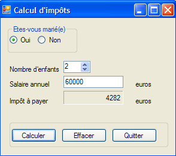 |
7.6.1. حل Visual Studio
يتكون حل Visual Studio من المكونات التالية:
 |
- [1]: يتكون المشروع من العناصر التالية:
- [Program.cs]: الفئة التي تطلق التطبيق
- [Form1.cs]: فئة النموذج الأول
- [Form2]: فئة النموذج الثاني
- [lib] المفصل في [2]: تم تضمين جميع ملفات DLL المطلوبة للمشروع:
- [ImpotsV5-dao.dll]: مكتبة DLL لطبقة [dao] التي تم إنشاؤها في الفقرة 6.4.3؛
- [ImpotsV5-metier.dll]: مكتبة DLL لطبقة [dao] التي تم إنشاؤها في الفقرة 6.4.4؛
- [Spring.Core.dll]، [Common.Logging.dll]، [antlr.runtime.dll]: مكتبة DLL الخاصة بـ Spring المستخدمة بالفعل في الإصدار السابق (انظر الفقرة 6.4.6).
- [المراجع] المفصلة في [3]: مراجع المشروع. تمت إضافة مرجع لكل مكتبة DLL في ملف [lib]
- [App.config]: ملف تكوين المشروع. وهو مطابق لملف الإصدار السابق الموصوف في الفقرة 6.4.6؛
- [DataImpot.txt]: ملف الشرائح الضريبية الذي تم تكوينه ليتم نسخه تلقائيًا إلى مجلد تنفيذ المشروع [4]
النموذج [Form1] هو النموذج الخاص بإدخال معلمات حساب الضريبة [A] التي تم عرضها أعلاه. يستخدم النموذج [Form2] [B] لعرض رسالة خطأ:
 |
7.6.2. [فئة Program.cs]
تقوم فئة [Program.cs] بتشغيل التطبيق. وفيما يلي شفرة البرمجة الخاصة بها:
using System;
using System.Windows.Forms;
using Spring.Context;
using Spring.Context.Support;
using Metier;
using System.Text;
namespace Chap5 {
static class Program {
/// <summary>
/// The main entry point for the application.
/// </summary>
[STAThread]
static void Main() {
// code generated by Vs
Application.EnableVisualStyles();
Application.SetCompatibleTextRenderingDefault(false);
// --------------- Developer code
// instantiations [metier] and [dao] layers
IApplicationContext ctx = null;
Exception ex = null;
IImpotMetier metier = null;
try {
// spring context
ctx = ContextRegistry.GetContext();
// a reference is requested on the [metier] layer
metier = (IImpotMetier)ctx.GetObject("metier");
} catch (Exception e1) {
// memory exception
ex = e1;
}
// form to display
Form form = null;
// was there an exception?
if (ex != null) {
// yes - create the error message to be displayed
StringBuilder msgErreur = new StringBuilder(String.Format("Chaîne des exceptions : {0}{1}", "".PadLeft(40, '-'), Environment.NewLine));
Exception e = ex;
while (e != null) {
msgErreur.Append(String.Format("{0}: {1}{2}", e.GetType().FullName, e.Message, Environment.NewLine));
msgErreur.Append(String.Format("{0}{1}", "".PadLeft(40, '-'), Environment.NewLine));
e = e.InnerException;
}
// creation of an error window to which the error message to be displayed is passed
Form2 form2 = new Form2();
form2.MsgErreur = msgErreur.ToString();
// this will be the window to display
form = form2;
} else {
// all went well
// creation of a graphical interface [Form1] to which we pass the reference on the [metier] layer
Form1 form1 = new Form1();
form1.Metier = metier;
// this will be the window to display
form = form1;
}
// window display
Application.Run(form);
}
}
}
تم استكمال الكود الذي أنشأه Visual Studio بدءًا من السطر 19. يستخدم التطبيق ملف [ App.config] التالي:
<?xml version="1.0" encoding="utf-8" ?>
<configuration>
<configSections>
<sectionGroup name="spring">
<section name="context" type="Spring.Context.Support.ContextHandler, Spring.Core" />
<section name="objects" type="Spring.Context.Support.DefaultSectionHandler, Spring.Core" />
</sectionGroup>
</configSections>
<spring>
<context>
<resource uri="config://spring/objects" />
</context>
<objects xmlns="http://www.springframework.net">
<object name="dao" type="Dao.FileImpot, ImpotsV5-dao">
<constructor-arg index="0" value="DataImpot.txt"/>
</object>
<object name="metier" type="Metier.ImpotMetier, ImpotsV5-metier">
<constructor-arg index="0" ref="dao"/>
</object>
</objects>
</spring>
</configuration>
- الأسطر 24-32: استخدام ملف [App.config] السابق لإنشاء مثيلات لطبقات [metier] و[dao]
- السطر 26: استخدام ملف [App.config]
- السطر 28: استرداد مرجع من طبقة [metier]
- السطر 31: استثناء تم تذكره
- السطر 34: سيحدد نموذج المرجع النموذج المراد عرضه (form1 أو form2)
- الأسطر 36-50: في حالة حدوث استثناء، نستعد لعرض نموذج من النوع [Form2]
- الأسطر 38-44: إنشاء رسالة الخطأ المراد عرضها. تتكون من تسلسل رسائل الخطأ من الاستثناءات المختلفة الموجودة في سلسلة الاستثناءات.
- السطر 46: يتم إنشاء نموذج من النوع [Form2].
- السطر 47: كما سنرى لاحقًا، هذا النموذج هو خاصية عامة MsgErreur وهي رسالة الخطأ التي سيتم عرضها:
public string MsgErreur { private get; set; }
يتم إدخال هذه الخاصية.
- السطر 49: يتم تهيئة النموذج المرجعي الذي يحدد النافذة المراد عرضها. لاحظ تعدد الأشكال في العمل. form2 ليس من النوع [Form] بل من النوع [Form2]، وهو نوع مشتق من [Form].
- الأسطر 50-57: لا توجد استثناءات. نحن نستعد لعرض نموذج من النوع [Form1].
- السطر 53: يتم إنشاء نموذج من النوع [Form1].
- السطر 54: كما سنرى لاحقًا، هذا النموذج هو خاصية عامة Trade وهي مرجع إلى طبقة [metier]:
public IImpotMetier Metier { private get; set; }
يتم إدخال هذه الخاصية.
- السطر 56: يتم تهيئة النموذج المرجعي الذي يحدد النافذة المراد عرضها. مرة أخرى، يتم استخدام تعدد الأشكال. form1 ليس من النوع [Form] بل من النوع [Form1]، وهو نوع مشتق من [Form].
- السطر 59: يتم عرض النافذة المشار إليها بواسطة form.
7.6.3. نموذج [Form1]
في وضع [design]، يكون النموذج [Form1] كما يلي:
 |
العناصر التحكمية هي كما يلي
رقم | النوع | الاسم | الدور |
0 | مربع المجموعة | groupBox1 | النص=هل أنت متزوج/متزوجة |
1 | زر الاختيار | زر الاختيار نعم | محدد إذا كان متزوجًا |
2 | زر الاختيار | زر الاختيار "لا" | محدد إذا لم يكن متزوجًا محدد=صحيح |
3 | رقمي لأعلى ولأسفل | رقمي لأعلى ولأسفل للأطفال | عدد الأطفال الحد الأدنى=0، الحد الأقصى=20، الزيادة=1 |
4 | مربع نص | textSalaire | الراتب السنوي للمكلف بالضريبة باليورو |
5 | التسمية | labelImpot | مبلغ الضريبة المستحقة BorderStyle=Fixed3D |
6 | زر | زر الحساب | يبدأ حساب الضريبة |
7 | زر | زر الحذف | يعيد النموذج إلى الحالة التي كان عليها عند التحميل |
8 | زر | زر الخروج | لإنهاء التطبيق |
قواعد تشغيل النموذج
- يظل زر "حساب" معطلاً طالما لم يكن هناك شيء في حقل الراتب
- إذا تبين، عند إجراء الحساب، أن الراتب غير صحيح، يتم الإبلاغ عن الخطأ [9]
رمز الفئة هو كما يلي:
using System.Windows.Forms;
using Metier;
using System;
namespace Chap5 {
public partial class Form1 : Form {
// business] layer
public IImpotMetier Metier { private get; set; }
public Form1() {
InitializeComponent();
}
private void buttonCalculer_Click(object sender, System.EventArgs e) {
// is the salary correct?
int salaire;
bool ok=int.TryParse(textSalaire.Text.Trim(), out salaire);
if (! ok || salaire < 0) {
// error msg
MessageBox.Show("Salaire incorrect", "Erreur de saisie", MessageBoxButtons.OK, MessageBoxIcon.Error);
// back to the wrong field
textSalaire.Focus();
// select text for input field
textSalaire.SelectAll();
// back to input interface
return;
}
// salary is correct - tax can be calculated
labelImpot.Text = Metier.CalculerImpot(radioButtonOui.Checked, (int)numericUpDownEnfants.Value, salaire).ToString();
}
private void buttonQuitter_Click(object sender, System.EventArgs e) {
Environment.Exit(0);
}
private void buttonEffacer_Click(object sender, System.EventArgs e) {
// raz form
labelImpot.Text = "";
numericUpDownEnfants.Value = 0;
textSalaire.Text = "";
radioButtonNon.Checked = true;
}
private void textSalaire_TextChanged(object sender, EventArgs e) {
// calculate] button status
buttonCalculer.Enabled=textSalaire.Text.Trim()!="";
}
}
}
نعلق فقط على الأجزاء المهمة:
- السطر [8]: الخاصية العامة Trade التي تسمح لفئة الإطلاق [Program.cs] بإدخال مرجع إلى طبقة [metier] في [Form1].
- السطر [14]: إجراء حساب الضريبة
- الأسطر 15-27: التحقق من صحة الراتب (عدد صحيح >=0).
- السطر 29: حساب الضريبة باستخدام طريقة [CalculerImpot] في طبقة [metier]. لاحظ بساطة هذه العملية، التي تحققت من خلال تغليف طبقة [metier] في مكتبة DLL.
7.6.4. [نموذج Form2]
في وضع [التصميم]، يكون شكل [Form2] كما يلي:
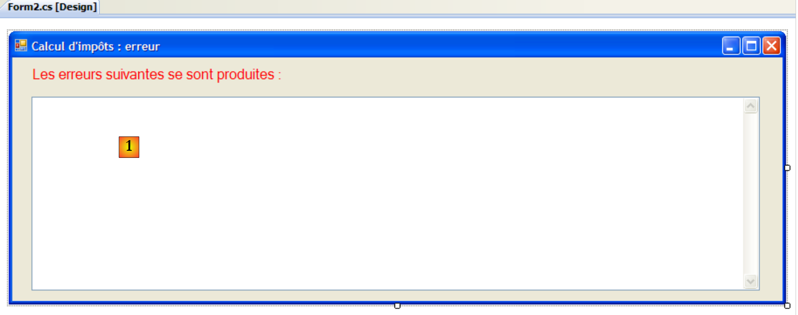 |
العناصر التحكمية هي كما يلي
رقم | النوع | الاسم | الدور |
1 | مربع نص | textBoxErreur | متعدد الأسطر=صحيح، أشرطة التمرير=كلاهما |
رمز الفئة هو كما يلي:
using System.Windows.Forms;
namespace Chap5 {
public partial class Form2 : Form {
// error msg
public string MsgErreur { private get; set; }
public Form2() {
InitializeComponent();
}
private void Form2_Load(object sender, System.EventArgs e) {
// error msg is displayed
textBoxErreur.Text = MsgErreur;
// deselect all text
textBoxErreur.Select(0, 0);
}
}
}
- السطر 6: خاصية عامة MsgErreur تسمح لفئة التشغيل [Program.cs] بإدخال رسالة الخطأ المراد عرضها في [Form2]. يتم عرض هذه الرسالة عند Load، الأسطر 12-16.
- السطر 14: يتم وضع رسالة الخطأ في TextBox
- السطر 16: يتم إزالة التحديد الذي تم إجراؤه في العملية السابقة. [TextBox].Select(début,longueur) تحدد (تبرز) طول الأحرف من الحرف رقم البداية. [TextBox].Select(0,0) تعادل إلغاء تحديد كل النص.
7.6.5. الخلاصة
دعونا نلقي نظرة على البنية ثلاثية الطبقات المستخدمة:
 |
مكّنتنا هذه البنية من استبدال طبقة [ui] الحالية بتنفيذ رسومي، دون تغيير طبقتي [metier] و[dao]. وتمكّنا من التركيز على طبقة [ui] دون القلق بشأن التأثير المحتمل على الطبقات الأخرى. وهذه هي الميزة الرئيسية للبنى ثلاثية الطبقات. سنرى مثالاً آخر لاحقًا، عندما يتم استبدال طبقة [dao]، التي تستخدم حاليًا بيانات من ملف نصي، بطبقة [dao] تستخدم بيانات من قاعدة بيانات. وكما سنرى، لن يكون لهذا أي تأثير على طبقتي [ui] و[metier].